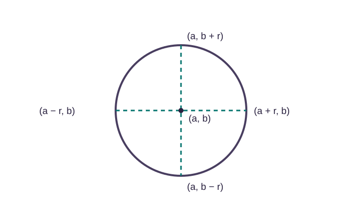
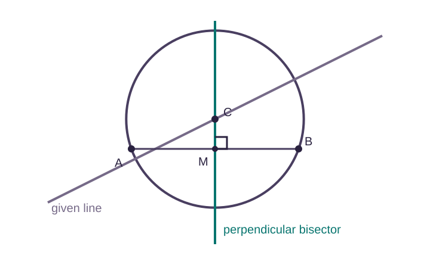

Here A, B and C are coefficients. A and B are not the centre coordinates.
The same letter can have a different job in a different formula. This lesson uses A, B, C for general-form coefficients and (a, b) for centre coordinates.
Complete the square to convert general form into standard form.
A real, nondegenerate circle needs r² > 0. If r² = 0, only one point remains. If r² < 0, there are no real points.
Therefore the centre is (3, −2) and the radius is 4.
Alternative coefficient notation
Some questions write x² + y² + 2gx + 2fy + c = 0.
After completing the squares, the centre is (−g, −f) and r² = g² + f² − c.
The letters g and f are coefficients. Their signs flip when you read the centre.
Complete one square at a time
To complete a square, halve the coefficient of x, put the result inside a bracket, then subtract the square you added:
x² + kx = (x + k/2)² − (k/2)²
Worked example
Convert to standard form
Find the centre and radius of x² + y² − 6x + 4y − 3 = 0.
Solution
Move the constant and group like terms: (x² − 6x) + (y² + 4y) = 3.
Half −6 to get −3: x² − 6x = (x − 3)² − 9.
Half 4 to get 2: y² + 4y = (y + 2)² − 4.
Substitute: (x − 3)² − 9 + (y + 2)² − 4 = 3.
Add 13 to both sides: (x − 3)² + (y + 2)² = 16.
Since 16 > 0, this is a circle. Centre (3, −2), radius 4.
Two more worked examples
Worked example · 1
Both signs matter
Find the centre and radius of x² + y² − 8x + 4y − 5 = 0.
Solution
(x² − 8x) + (y² + 4y) = 5.
(x − 4)² − 16 + (y + 2)² − 4 = 5.
(x − 4)² + (y + 2)² = 25.
Centre (4, −2), radius 5.
Worked example · 2
A positive x coefficient
Find the centre and radius of x² + y² + 6x − 2y − 26 = 0.
Solution
(x² + 6x) + (y² − 2y) = 26.
(x + 3)² − 9 + (y − 1)² − 1 = 26.
(x + 3)² + (y − 1)² = 36.
Centre (−3, 1), radius 6.
Quick check · 1
In x² + y² + 14x − 2y + C = 0, what is the x-coordinate of the centre?
Extreme points and axis crossings

Highest: (a, b + r).
Lowest: (a, b − r).
Leftmost: (a − r, b).
Rightmost: (a + r, b).
For x-axis crossings, every point has y = 0. Substitute y = 0 and solve the quadratic in x.
For y-axis crossings, every point has x = 0. Substitute x = 0 and solve the quadratic in y.
Worked example · x-axis crossings
The circle is x² + y² − 4x + 6y − 77 = 0. Find the x-coordinates where it meets the x-axis.
Solution
On the x-axis, y = 0: x² − 4x − 77 = 0.
We need two numbers with product −77 and sum −4: −11 and 7.
(x + 7)(x − 11) = 0.
x = −7 or x = 11.
Worked example · lowest point
Find the centre, radius and lowest point of x² + y² + 6x − 2y − 26 = 0.
Solution
Complete both squares: (x + 3)² + (y − 1)² = 36.
The centre is (−3, 1), r² = 36 and r = 6.
Lowest point = (a, b − r) = (−3, 1 − 6).
Centre (−3, 1), radius 6, lowest point (−3, −5).
You do not need the centre to find an axis crossing. Substitute the fixed coordinate straight into the general form.
Build a circle from conditions
When the centre is not given, each independent clue gives an equation. Two unknowns need two equations.
Two points and a line containing the centre
The centre is equally far from both points, so it lies on their perpendicular bisector.
Find the midpoint and perpendicular gradient to form that bisector.
Intersect it with the given line to find centre (a, b).
Find r² as the distance squared from the centre to either point.
Write the standard form.
Two points and a fixed constant
Start with x² + y² + Ax + By + C = 0, where C is given.
Substitute each point to get two equations in A and B.
Solve them simultaneously.
Centre = (−A/2, −B/2).
r² = (A/2)² + (B/2)² − C.

The centre is where the two required lines meet.
Worked examples from conditions
Worked example · 1
Centre on a given line
A(−7, 3) and B(5, 11) lie on a circle whose centre lies on 12x − 5y = 70. Find the circle.
Solution
Midpoint of AB: M = ((−7 + 5)/2, (3 + 11)/2) = (−1, 7).
m_AB = (11 − 3)/(5 − (−7)) = 8/12 = 2/3.
The perpendicular gradient is −3/2.
Through M: y − 7 = −3/2(x + 1), so the perpendicular bisector is 3x + 2y = 11.
The centre lies on both 3x + 2y = 11 and 12x − 5y = 70.
From the first, y = 11/2 − 3x/2. Substitute: 12x − 5(11/2 − 3x/2) = 70.
Multiply by 2: 24x − 55 + 15x = 140, so 39x = 195 and x = 5.
Then y = 11/2 − 15/2 = −2. Centre = (5, −2).
Using B, r² = (5 − 5)² + (11 − (−2))² = 169.
(x − 5)² + (y + 2)² = 169.
Worked example · 2
Find two coefficients
The circle x² + y² + ax + by − 12 = 0 passes through A(1, 1) and B(2, −6). Here a and b are reused as coefficients, so the centre will be (−a/2, −b/2).
Solution
Substitute A: 1 + 1 + a + b − 12 = 0, so a + b = 10.
Substitute B: 4 + 36 + 2a − 6b − 12 = 0, so 2a − 6b = −28 and a − 3b = −14.
Subtract the second equation from the first: (a + b) − (a − 3b) = 10 − (−14).
4b = 24, so b = 6. Then a = 10 − 6 = 4.
Centre = (−a/2, −b/2) = (−4/2, −6/2).
a = 4, b = 6, centre (−2, −3).
Quick check · 2
For x² + y² + 2x − 4y − 12 = 0, what equation remains when finding y-axis crossings?
Key ideas
Complete the x-square and y-square separately.
In standard form, bracket signs reverse when you read the centre.
Check r² > 0 for a real, nondegenerate circle.
Extreme points move one radius horizontally or vertically from the centre.
Set y = 0 on the x-axis and x = 0 on the y-axis.
A centre equidistant from two points lies on their perpendicular bisector.
When a and b are coefficients, the centre is (−a/2, −b/2).